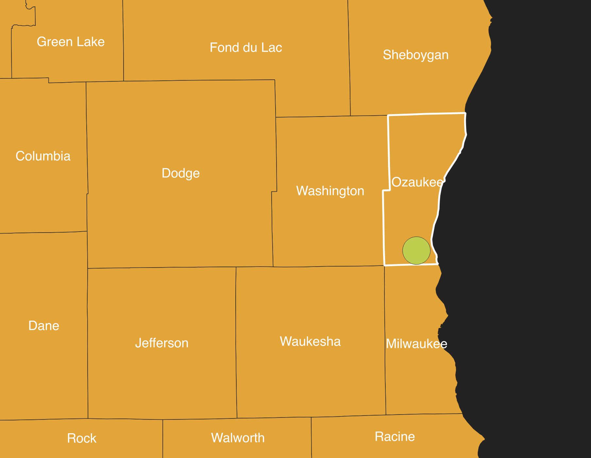
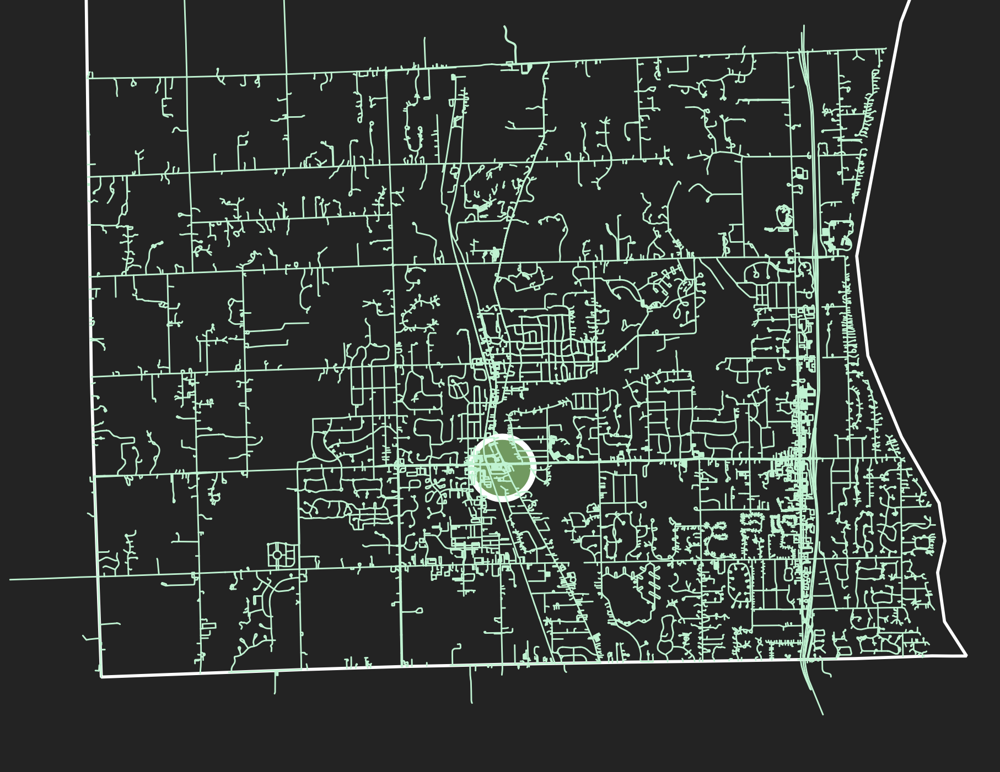

An intersection refers to the place where streets meet. It can also mean the meeting of needs and wants or the reconciliation of goals and realities. In each of these understandings, it forms the substrate on which change happens.
Like most places, the intersection is a palimpsest. Its temporal stratigraphy tells the story of how a virgin landscape served a population’s needs and in doing so was changed.
This website is an exploration of a particular intersection, the meeting of Cedarburg Road and Mequon Road in Mequon, Wisconsin. It’s an exploration of how space and people interact using principles of urban geography. It's the final project for the Fall 2025 session of Geography 441, led by Dr. Anne Bonds, at the University of Wisconsin-Milwaukee.
Submitted by Greg Latsch
Context
Mequon, Wisconsin, is a city in the southern park of Ozaukee County. Thiensville is a village contained within Mequon.
The intersection of Cedarburg and Mequon Roads is in the south-central portion of Mequon.
